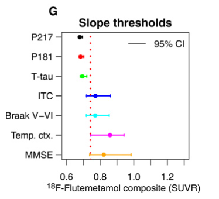

In this week’s reading, my main focus is the association between amyloid-β and tau pathology. Although Aβ is widely thought to promote the emergence and spread of tau in Alzheimer’s disease, the mechanisms linking the two remain unclear. These studies approach the problem from different angles: soluble CSF tau is proposed as an intermediate step between Aβ deposition and later fibrillar tau aggregation; neuronal activity and Aβ are modeled as factors that shape early tau seeding in the entorhinal cortex; structural tract alterations are linked to downstream tau accumulation in amyloid-positive individuals; and connectivity-based models suggest that both remote and local Aβ–tau interactions may help initiate and accelerate tau spreading.
Aβ deposition is associated with increases in soluble and phosphorylated tau that precede a positive Tau PET in Alzheimer’s disease
Mattsson-Carlgren et al., Science Advances (2020) 10.1126/sciadv.aaz2387
Summary
Previous studies suggest that CSF tau biomarkers and tau PET reflect different aspects of tau pathology and may become abnormal at different stages of the disease. Aβ accumulation is thought to trigger the tau initiation and aggregation. But the temporal relationship between Aβ plaques and tau aggregation is limited. This study tested the hypothesis that Aβ pathology first induces changes in soluble tau metabolism—including increased tau phosphorylation and release—which precede and potentially contribute to the later formation of insoluble PHF-tau aggregates detectable by Tau PET.
Using cross-sectional and longitudinal biomarker data across the AD continuum, together with MAPT mutation carriers and a 5xFAD mouse model, they found:
- CSF p-tau level already increased in Aβ+ CU patients, while Tau PET positivity remains rare, suggesting that alterations in soluble tau metabolism precede detectable PHF-tau aggregation.
- In early stage of AD, CSF tau is positive, while tau PET is negative. The CSF tau keep increase before tau PET positive.
- CSF tau increase in early Aβ accumulation, but tau PET increases after Aβ obvious present
- Statistically, CSF p-tau meditates the association between Aβ PET and tau PET
- CSF tau predicts future Tau PET accumulation in cognitively impaired people. But tau PET, not CSF tau, predicts cognitive impairment
- MAPT mutation carriers could develop tau pathology without elevated CSF P-tau when Aβ pathology was absent, whereas 5xFAD mice showed increased CSF tau after Aβ accumulation despite never developing NFT-like tau aggregates.

New knowledge
Tau species
normal soluble tau → modified soluble tau(e.g. phosphorylation) → misfolded/oligomeric tau → fibrillar PHF tau → neurofibrillary tangles, NFT
- soluble tau: not become insoluble fibrillar aggregate yet.
- CSF T-tau: tau release / soluble tau metabolism
- CSF p-tau: tau phosphorylation + release
- phosphorylated is a normal process for tau. But if tau phosphorylation pattern changes, with misfolding and aggregation, it would cause pathology
- P-tau181 / P-tau217 (different phosphorylation site of tau protein, biomarker)
- PHF: paired helical filament (can only be examined using tau PET)
- NFT: PHF >>> NFT
- pre-tangle: abnormal tau accumulation or conformational changes already exist within neurons before mature NFTs form
Personal highlights
- They treated CSF tau as statistical mediator between Aβ and tau aggregation. And the good part is it’s in early stage.

- They find 2 ‘wet experiments’ in opposite direction: MAPT mutation carriers, which have the tau pathology present, but not Aβ pathology, can be used to study the relationship of tau pathology - CSF tau increase, and Aβ plaques - CSF tau increase; 5xFAD mice, which have the Aβ pathology, but not develop NFT/PHF tau aggregates, can be use to confirm CSF tau increase is induced by Aβ, even without forming altered soluble tau. Together, they support the interpretation that elevated CSF tau is closely linked to Aβ-induced alterations in soluble tau metabolism rather than simply reflecting aggregated tau burden.
Comment
yes they did the mediation analysis!!! haha.
This paper contains so many variables, that I feel a little bit chaos. I know there is a main line: Aβ → CSF tau → tau PET. but they even includes the cognitive decline as a variable. I was mainly confused when reading Tau PET, but not CSF tau, predicts cognitive impairment and CSF tau predicts future Tau PET accumulation in cognitively impaired people. Like, what do you exactly want to predict!? these parts suddenly started to use one to predict another two. I even think it can break into 2 papers, but maybe that’s why it’s on science….
Neuronal activity and amyloid-β promote tau seeding in the entorhinal cortex in Alzheimer’s disease
Alexandersen et al., Brain (2026) 10.1093/brain/awaf374
Summary
Tau pathology typically emerges first in the medial temporal lobe, particularly the entorhinal cortex, but the mechanisms underlying this selective vulnerability remain unclear, especially early amyloid deposition is located in neocortex. his study proposed that brain-wide neuronal activity and Aβ deposition modulate the transport of low-concentration tau seeds along structural connections, thereby shaping where tau pathology is most likely to initiate. Rather than modelling the full progression of tau pathology, the authors focused specifically on early tau seeding susceptibility, using FDG PET as a proxy for neuronal/metabolic activity and Aβ PET to inform separate transport models. They found:
- brain-wide neuronal activity gradients predict tau seeding in the medial temporal lobe regardless of Aβ status and diagnosis
- Aβ deposition selectively amplifies tau seeding in the entorhinal cortex
- seeding predictions in early Braak stages are statistically significant upon shuffling PET SUVRs
- subject-level seeding predictions correlate with early empirical tau deposition

New knowledge
FDG PET: ^18F-FDG PET measures regional glucose metabolism. Because neuronal and synaptic activity are major contributors to cerebral energy consumption, FDG PET is often used as an indirect proxy for regional neuronal/metabolic activity, although it is not a direct measurement of neuronal firing.
Linear versus non-linear spreading models:
Linear diffusion models describe the transport and redistribution of proteins across a brain network, whereas non-linear terms can represent local prion-like replication or aggregation within individual regions.
Subgroups can be diagnosis level, or biomarker level. For example, in this paper, diagnosis level includes: all, CN, MCI, and AD; biomarker level includes Aβ-, (Aβ+, tMTL-, tNEO-), (Aβ+, tMTL+, tNEO-), and (Aβ+, tMTL+, tNE+)
Personal highlights
- This study does not model tau progression throughout the entire disease course. Instead, it focuses on the transport and regional accumulation of early tau seeds before substantial pathological replication occurs.
- I am interested in how the authors evaluate a mechanistic model using several levels of statistical evidence rather than relying only on spatial correlation:
- Permutation test: does the real spatial arrangement of FDG/Aβ values preferentially generate seeding in early Braak regions compared with randomized spatial arrangements?
- regression model - tau seed concentration difference across CN, MCI and AD groups.
- the correlation of ground truth and prediction
- The way they explained their result is interesting. For example, fig3, it’s not estimate the prediction against real tau, it wants to compare the predict stability among groups of FDG and amyloid PET
Structural tract alterations predict downstream tau accumulation in amyloid-positive older individuals
Jacobs et al., Nature Neuroscience (2018) 10.1038/s41593-018-0070-z
Summary
This study investigated the hypothesis that tau propagation is associated with alterations in structural connectivity, and that this relationship is potentiated by amyloid pathology. The authors combined longitudinal structural MRI and DTI with amyloid PET, tau PET, and cognitive assessments in cognitively healthy older adults.
They found:
- Amyloid deposition is associated with increased hippocampal volume loss
- Lower hippocampal volume is associated with white matter abnormalities of HCB and UF at baseline. Hippocampal volume change can predict HCB diffuse change with time, but not UF. Verse vasa.
- Hippocampal cingulum diffusivity selectively predicts accumulation of tau pathology in the connected PCC in amyloid-positive individuals
- PCC tau deposition can predict memory loss

New knowledge
- HCB: hippocampal cingulum bundle
- PCC: posterior cingulate cortex
- UF: uncinate fasciculus
- MD / AxD / RD / FA: different diffusion measures reflecting white-matter microstructural properties, although their biological interpretations are not specific enough to equate them directly with axonal or myelin damage.
- Different medical terminology:
- Cognitively unimpaired (CU) / cognitively normal (CN): No objective cognitive impairment on standard clinical or neuropsychological assessment.
- Subjective cognitive decline (SCD): The person reports worsening cognition, but objective cognitive testing is still largely normal.
- Preclinical AD: Alzheimer’s disease pathology is already present, usually indicated by biomarkers such as Aβ positivity, but the person is still cognitively unimpaired.
- Mild cognitive impairment (MCI): Objective cognitive impairment is present, but daily functioning is relatively preserved and the criteria for dementia are not met.
- Prodromal AD: An early symptomatic stage of AD, usually referring to MCI with evidence that the underlying pathology is Alzheimer’s disease.
- AD dementia: Cognitive impairment is severe enough to interfere with everyday functioning and is attributable to Alzheimer’s disease.
- Prognostic: Not a disease stage. It describes a study or marker that predicts a future outcome, such as cognitive decline, conversion to dementia, or disease progression.
Personal highlights
- They used several anatomical and functional negative controls to test whether the observed associations were specific to the proposed propagation pathway rather than reflecting general degeneration or simple spatial proximity. The UF was used as a control tract because it also innervates the medial temporal lobe but does not primarily connect the hippocampus with the PCC. The inferior temporal cortex was used as a control tau region because it is spatially close to the hippocampus but is not a primary downstream target of the HCB. Executive function was additionally used as a control cognitive domain.
Comment
So this paper was published in 2018, when DTI was not able to capture the perforant pathway. Can it now? And regarding their use of the UF as a control tract: I mean, is that really valid? It is not a completely parallel white-matter tract to the HCB, except in terms of the connectivity aspect.
The right-lateralized association is also new to me: “It is also possible that the right-sided effects reflect a selection bias. Left-sided pathology may induce more pronounced cognitive deficits, such as language problems.” But as they discussed, it might be preclinical disease stage asymmetry, or selection bias.
Regional Aβ-tau interactions promote onset and acceleration of Alzheimer’s disease tau spreading
Lee et al., Neuron (2020) 10.1016/j.neuron.2022.03.034
Summary
How Aβ and tau pathology interact to promote Alzheimer’s disease progression remains unclear, partly because their early spatial distributions are incongruent. This study combined cross-sectional and longitudinal Aβ/tau PET data with connectivity to construct a connectivity-based framework for tau spreading and Aβ–tau interactions.
They found:
- tau pathology showed an apparent acceleration phase in its spatial expansion during prodromal AD
- remote Aβ incites tau spreading by interacting, via long-range connections, with tau in the EC whereas
- local Aβ–tau interactions in the inferior temporal gyrus (ITG) facilitate widespread, connectivity-based tau propagation into neocortical regions that become tau-positive during the tau acceleration phase.

Personal highlights
- They used cross-sectional data to construct a data-driven pseudo-longitudinal disease order by ranking subjects according to the number of tau-positive ROIs. Based on this order, they operationally defined a tau “acceleration phase.” This is still an inferred disease progression pattern rather than a directly observed longitudinal trajectory.

- A new concept to me is the network flow-based tau spreading model. Instead of considering only direct connections or a single shortest path, they considered multiple distinct paths between two regions and transformed the conventional SC matrix into a flow-based connectivity matrix. They then let each ROI serve as a candidate seed/epicenter and compared its propagation map with the acceleration-phase tau spreading pattern derived from the pseudo-longitudinal data. Regions whose connectivity patterns consistently matched the earlier parts of this acceleration pattern were identified as potential propagation hubs, with bilateral ITG emerging as the main result.

Comment
This paper is interesting because it proposes several new concepts, especially the idea of a tau acceleration phase and a propagation hub defined by network topology rather than conventional functional or structural hubness.
The two major models in this paper are actually quite independent from each other. The only connection is the ITG. The network flow-based model tries to find propagation hub. The network-based Aβ–tau interaction model tries to predict the region where strongest local or remote Aβ–tau interaction. I think the results depend strongly on how these quantities are defined rather than emerging from a free-running disease simulation.

I can understand the biological hypothesis behind the Aβ–tau interaction model, but I am less convinced by how strongly the authors interpret the result. For example, they state that “early Aβ-tau interactions are likely mediated, at least in part, by long-range neural connections between the EC and brain regions in which early Aβ deposition occurs.” The longitudinal analyses provide additional support for this interpretation, but the study still does not directly demonstrate that long-range connectivity is the biological mechanism mediating the effect.
Another potentially common limitation of this type of modeling study is the use of normative connectivity derived from healthy participants. AD pathology itself may alter structural or functional connectivity, meaning that the network used as the substrate for disease spreading may also change during disease progression.
Comment
This paper is simpler than I initially expected, with relatively few model components and free parameters. Its strength does not come from model complexity, but from constructing a narrowly defined mechanistic hypothesis and testing it at several levels.